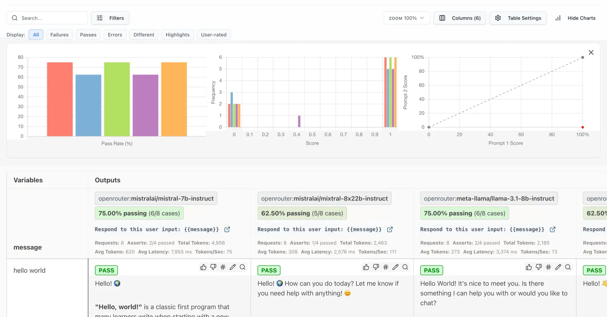

The idea in one sentence. A change to a shipping LLM product (a prompt edit, a model swap, a retrieval or tool change) reaches users only after it beats the incumbent configuration, the champion, at every stage of a promotion path whose stages are each cheaper than the failure they stop, and every failure found at any stage becomes a new tagged item in the golden set the first stage reads.
Cheap stages run first; each catches what the stage before cannot. An offline gate sees regressions on your own cases in minutes but only on inputs you thought of; shadow traffic sees real inputs but no user reactions; only an A/B test sees whether people accept, retry, abandon or escalate; only monitoring sees decay after launch. The loop underneath is what keeps the first stage honest: failures found later are read, named and promoted into the golden set (sections 1 and 2).
| Stage | Question it answers | What trips it | Cost and time | Catches what the stage before cannot |
|---|---|---|---|---|
| 1. Offline gate on frozen golden sets, in CI | Did this change break anything we already know matters? | A paired drop against the champion beyond a threshold in any slice; a hard floor on safety slices; a failing deterministic assertion | Minutes per change; judge calls cost money | Regressions on your product, which public benchmarks never see |
| 2. Budget gate | Can we afford it, and is it fast enough? | Tokens per request, p95 latency or projected spend above budget | Seconds (computed from stage 1's runs) | A quality win that the business cannot pay for |
| 3. Shadow deployment | Does it hold on real traffic? | Per-intent score distributions of challenger against champion on the same mirrored requests; errors; latency | Doubles inference for the mirrored share; nothing reaches users | Inputs nobody imagined when building the golden set: real traffic is uglier than any curated set |
| 4. Canary, then A/B test | Do users and the business actually come out ahead? | Guardrail metrics (errors, refusals, complaints, task completion) crossing a rollback trigger; the primary metric not improving | Days to weeks; real users exposed | What only behaviour shows: whether people accept, retry, abandon or escalate |
| 5. Monitoring after full rollout | Is it still good? | Drift in sampled judge scores, implicit signals or input mix; silent provider-side changes | Continuous; a sampled share of live traces | Decay after launch: traffic, product and the model behind an API all move |
Keep every configuration pinned and logged (prompt hash, model version, judge model and prompt version, dataset version) so that any score can be reproduced and a change in score traced to the one thing that changed. On the root page's five layers of evaluation (Reading, section 1), these are the two most expensive layers: regression gates and online measurement.
An eval set is not written from imagination. It is read out of real traces: you look at what the system actually did, name the ways it fails, and only then write a check for each named failure. Hamel Husain and Shreya Shankar's FAQ gives the working numbers: review "at least 100 traces", annotate "at least 30 traces yourself", and stop at theoretical saturation, "meaning new reviews stop revealing failure modes or changing existing ones" (evals FAQ, read 2026-10-24). They report having "spent 60-80% of our development time on error analysis and evaluation". Step through the loop:
Name the failure before you measure it. Notes first (open coding), categories second (axial coding, which the FAQ calls "the most important step"), evaluators third: a rubric written before reading "can get in the way", because "Reviewers can become so focused on checking each item that they overlook problems outside the rubric". The running example of this page (section 3) ends in exactly this loop: its three worst writing drops share one name, a constrained rewrite.
Binary labels, one failure mode per evaluator. The FAQ prefers pass or fail to 1 to 5 scales: "Binary evaluations force clearer thinking and more consistent labeling", while on Likert scales "annotators often default to middle values". Each named mode gets either a code check, when an objective rule can identify it, or a judge validated on "100 to 200 examples for each failure mode" (judge design and its agreement measures: LLM-as-judge).
| Method | What it does | Main limitation |
|---|---|---|
| Random | Selects traces with equal probability | A small batch can miss rare cases |
| Clustering | Groups traces by similar content and selects from each group | Depends on the features and clustering choices |
| Data analysis | Reviews extreme values such as latency or tool count | An extreme value may have nothing to do with quality |
| Classification | An evaluator or another model flags likely failures | Favours problems the classifier already knows how to find |
| Feedback | Traces with negative user feedback | Misses problems that users do not report |
The table runs from most exploratory to most targeted; start exploratory, lean on signals as you learn, and "Keep some random traces in every batch" (same FAQ). Where traces come from and how they are sampled and redacted at collection time is LLM observability's subject.
Every confirmed failure becomes a new tagged item and, where a judge grades it, a rubric criterion. Teams describe the same path: DoorDash, "Newly identified issues are systematically added to Promptfoo test suites" (Dasher support automation, Sep 2024); Vercel for v0, "we add new, failing prompts to the eval set" (Eval-driven development, 17 Oct 2024); Anthropic, failures from the bug tracker and support queue become new tasks, and capability evals the system has learned to pass "graduate" to the regression suite (Demystifying evals for AI agents, 9 Jan 2026).
A golden set is the instrument the gate reads, so it is built and maintained like code: sources in, tagged items, two suites with different jobs, a version number.
The tags make per-slice gating possible; the split keeps the pass rate readable. A regression item guards something that already works and should pass almost always (Anthropic: regression suites "should have a nearly 100% pass rate"); a capability item measures something the system cannot yet do and is expected to fail often. One pass rate over both moves for reasons nobody can read. Notion's team, in a Braintrust case study (vendor page, undated), notes that a new model "might pass a regression eval at 100%", which is why they also keep frontier evals: a set everyone passes has stopped measuring.
Teams sit on both sides of the 100 to 500 range because they mean different things by an item:
| Team, date | What they gate on |
|---|---|
| Anthropic, Demystifying evals for AI agents, 9 Jan 2026 | "20-50 simple tasks drawn from real failures is a great start"; regression suites "should have a nearly 100% pass rate" |
| Uber, Enhanced Agentic-RAG, 29 May 2025 | A "golden set of 100+ test queries" curated by experts; evaluation time cut "from weeks to minutes" |
| Rechat (Hamel Husain, Your AI Product Needs Evals, 29 Mar 2024) | "hundreds" of assertion-style unit tests, updated from new failures, run in CI on every change |
| GitHub Copilot (How we evaluate AI models, 17 Jan 2025) | "more than 4,000 offline tests, most of them as part of our automated CI pipeline": about 100 containerised repositories with deliberately broken tests, and more than 1,000 chat questions graded by an LLM judge |
| GitLab Duo (How we validate and test AI models at scale, 9 May 2024) | "thousands of prompts tied to dozens of use cases" as a "proxy for production" without customer data; a focused subset during development, the broad set before release, and a daily run against the previous day's baseline |
The FAQ's other working numbers: "Start with 100 diverse traces and annotate at least the first 30 yourself"; in CI, "Favor assertions or other deterministic checks over LLM-as-judge" (evals FAQ, September 2026 revision). Anthropic's own documentation leans the other way on volume: "More questions with slightly lower signal automated grading is better than fewer questions with high-quality human hand-graded evals" (Develop tests).
The running example, on real released grades. The champion is claude-v1; the challenger is the cheaper claude-instant-v1, the cost-down swap every product team runs. The golden set is MT-Bench: 80 two-turn questions in 8 categories of 10, so 160 graded turns in 8 tagged slices, each graded 1 to 10 by GPT-4. Every grade is LMSYS's own released judgment (gpt-4_single.jsonl, mid-2023), not a simulation. Predict first: the two means differ by a few hundredths of a point; will any slice fail? Then step through it with one aggregate threshold, and again with thresholds per slice.
Thresholds are illustrative and the same in both runs: the aggregate gate fails a mean paired drop of 0.25 points or more; the per-slice gate fails a slice whose mean paired drop is 0.5 points or more and whose 95% interval lies wholly below zero, and sends a drop of 0.5 or more whose interval still reaches zero to review instead of passing it. Paired t intervals over graded turns, a question's two turns treated as independent; across all 561 MT-Bench model pairs the clustered standard error is a median 1.10 times the paired one (range 0.90 to 1.26), but for this pair the ratio is 1.00, so the intervals stand (measured on Eval statistics). Every threshold and any pair of the 34 graded models: Gate designer.
The average hid a one-point writing regression. Over the 159 turns both models have a grade for, the swap moves the score by −0.03 points and the aggregate gate passes it. Split by the tags the set already carries: writing drops 0.95 points (95% interval −1.51 to −0.39) and fails; extraction drops 0.70 with an interval that still crosses zero and goes to review; math improves by about as much as writing falls, which is why the mean did not move. Per-slice thresholds cost nothing extra; they only need the tags.
[[rating]], so the file records −1. Across all 34 models, 4 of 5,440 judgments failed this way, all on second turns, all about 9,500 to 12,000 characters long. A gate must decide what an unparsable verdict means (here: drop the pair from both sides, and count it), never average it in as a score.src/recompute.py.The gate in section 3 combines four kinds of rule, run on every pull request:
A gate result has three outcomes, not two: pass, fail, and "cannot tell", which escalates to more samples or a human. "Re-run until green" turns a gate into a random number generator with a bias toward shipping.
A gate that fails on an unchanged configuration trains everyone to ignore it. Three sources are well documented:
seed is "best effort" (API reference); Anthropic: "Even with temperature set to 0, the results will not be fully deterministic", and "Models released after Claude Opus 4.6 do not support setting temperature" (Messages API).Practice: pin every version, cache champion outputs, re-score K times where decoding is nondeterministic, quarantine items that flip on an unchanged configuration and fix or remove them, and log every gate run with its configuration so a failure can be replayed.
seed parameter. Anthropic's temperature parameter is now deprecated, so a gate that relied on temperature 0 for repeatability has to move to K samples.Every app-level eval tool stores the same three things (a dataset, the task's outputs, scores), but they differ in what counts as a failure, and the default is often stricter or looser than you think. Versions and products move fast: this is one dated table (docs read 2026-10-04; running and installing them is Eval harnesses; their tracing side is LLM observability).
| Tool | What an eval is | Compared against | What fails the build | Live traffic |
|---|---|---|---|---|
| promptfoo open source (MIT) | A config: prompts x providers x test cases; a test passes when the weighted score of its assertions reaches its threshold | Side by side in one matrix (image below) | eval exits with code 100 "when there is at least 1 test case failure or when the pass rate is below the threshold set by PROMPTFOO_PASS_RATE_THRESHOLD"; default 100%, no failures allowed | Not in the pages read |
| DeepEval Python, pytest-based | pytest tests calling assert_test() with metric thresholds | Each metric's threshold | "when a metric falls below its threshold the assertion fails, so the build goes red"; flaky=True turns a failure into a warning for cases that "flip between passing and failing across runs" | Not in the pages read |
| Braintrust commercial | Eval(data, task, scores) in your code, stored as an experiment | A baseline experiment, by default the most recent on the same git branch; a GitHub Action posts per-row score deltas to the pull request, regressions in red | bt eval exits non-zero only if an eval throws, so a score gate is your own reporter returning false | Scoring rules at a sampling rate |
| LangSmith commercial | pytest or SDK experiments; a pass feedback key per test case | A chosen experiment; the view counts runs that "regressed" or "improved" | pytest assertions | Online evaluators at a sampling rate |
| Langfuse open source (MIT outside ee/) | Evaluation rules over traced observations: filters, a sampling rate, evaluator assignments | Not in the pages read | Not in the pages read | Its design centre: rules score live traces; "A typical evaluation costs $0.01-0.10 per assessment" |
| Inspect UK AI Security Institute | A Python task: dataset, solvers, scorer; a log per run | Your own code over two logs | No score gate built in: fail_on_error stops a run on sample errors (or above an error share such as 0.1); the docs say to "always check their status" | Not in the pages read |
| OpenAI Evals API being retired | Graders with a pass_threshold; a run reports passed, failed and errored counts | Runs of one eval | Your code over the counts | Not in the pages read |
Retirement: OpenAI's Evals platform "will become read-only for existing users on October 31, 2026, and the platform is scheduled to shut down" on 30 November 2026. Export gate history now.

The second gate reads tokens per request, p95 latency and projected spend from the runs the first gate already made, so it is nearly free. A model swap that wins on quality at 3 times the cost fails promotion unless someone explicitly waives it. Latency belongs in it from the start: Honeycomb's query assistant saw responses take "from two to 15+ seconds" (All the Hard Stuff Nobody Talks About, 26 May 2023); GitHub describes Copilot model choices as a trade between acceptance rate and latency (17 Jan 2025); Discord measures tokens per second during a limited release "to predict the costs of a complete launch" (Developing Rapidly with Generative AI, 12 Apr 2024).
Model choice is a Pareto problem: plot quality against cost per request (and latency) for every candidate; only points on the frontier are candidates. Predict: as your traffic becomes mostly prompt tokens, does the cheap Claude model join the frontier? Drag the share.
The frontier depends on your traffic's token mix. The four strongest models in the MT-Bench file at their mid-2023 list prices: at 75% prompt tokens the frontier is gpt-3.5-turbo and gpt-4; claude-instant-v1 joins it above a 90.5% prompt share (5.51 − 3.88 x share ≤ 2), where its blended price drops below gpt-3.5-turbo's (blended price = share x prompt price + (1 − share) x completion price; recomputed in src/recompute.py). A 2023 snapshot to show the method, not advice: re-run the frontier on every price or model-version change.
Three practical additions. Cascades and routing: a cheap model with escalation on low confidence or judge-flagged outputs often beats any single point (routers: Gateways and routing). Quality per dollar as the gate metric on cost-sensitive surfaces. And the frontier is re-run, never cached.
The gate costs money too, and judge calls dominate it. Section 3's run took 320 GPT-4 calls averaging 775 (617 prompt, 159 completion) tokens each (counted with GPT-4's tokenizer on the released prompts and judgments): $8.97 for the two models, or $0.028 per call at the 2023 price of $0.03 per 1,000 prompt tokens and $0.06 per 1,000 completion tokens (OpenAI pricing, May 2023 capture). Small per run, but a gate runs on every change, an online judge on a share of all traffic, and the champion must be re-scored whenever the judge changes.
Offline evals catch the regressions you anticipated; online measurement catches what the golden set could not imagine. The instruments: sampled judge scoring of live traces (asynchronous, outside the request path, usually reference-free because live traffic has no reference answers); implicit signals (retry and regenerate rate, how much users edit an output, abandonment, escalation to a human); explicit feedback (thumbs, ratings); and the business or task-completion metric itself. The first design decision is how much traffic to judge.
The judge bill scales with the sampling rate; the rare slice is what runs short. Defaults: 1 million requests a day and $0.03 per judged trace, inside Langfuse's "A typical evaluation costs $0.01-0.10 per assessment" (LLM-as-a-judge); at 1% that is 10,000 judged traces and $300 a day (cost = requests x rate x price). The shaded bands are the vendor advice: Braintrust suggests "lower rates (1-10%)" for high-volume applications and "50-100%" for low-volume or critical ones (online scoring); LangSmith's example scores "10% of traces" (online evaluators). An intent that is 2% of traffic (illustrative) gets only 200 judged traces a day at 1%: sample by slice, not only uniformly, when a small slice matters.
Four ways to put a challenger in front of real traffic, from no user exposure to full randomisation. They differ in who sees the challenger's answer, and therefore in what they can measure:
Only designs that show the challenger to users can measure user reactions; only paired designs get high sensitivity cheaply. Shadow pairs both arms on the same request but cannot see behaviour; A/B sees behaviour but compares different users; interleaving pairs both rankers inside one user's list, which is why it needs so much less traffic.
The challenger runs on mirrored production requests; its responses are logged, never served. Scored on the same requests as the champion, the comparison is paired by construction, and score distributions are diffed per intent. Microsoft's experimentation platform: shadow experiments "compute the treatment and control response for the same user, but only show them the control response", which makes metrics "more sensitive than regular A/B tests"; the limit is that "metrics that need user response cannot be evaluated in shadow experiments" (How to Evaluate LLMs: A Complete Metric Framework, 27 Sep 2023).
A canary sends a small share of traffic (or only staff: GitHub runs an internal canary with its own employees before Copilot changes reach customers) to the challenger, with guardrail metrics (error rate, refusal rate, complaints, task completion, cost per session) and automatic rollback triggers; then a progressive rollout. Google's SRE workbook defines canarying as "a partial and time-limited deployment of a change in a service and its evaluation", compares the canary against a concurrent control rather than against yesterday because "time is one of the biggest sources of change", and keeps the metrics to "perhaps no more than a dozen" (Canarying releases). An A/B test randomises users between champion and challenger and compares a primary metric; Anthropic notes A/B results take "days or weeks to reach significance", which is why everything cheaper runs first.
From search ranking: each user sees one merged list built from both rankers, and credit goes to whichever ranker contributed the items the user chose. Netflix reported that interleaving "requires >100× fewer users than our most sensitive A/B metric to achieve 95% power", and uses it to prune candidates before an A/B test on the survivors (Interleaving at Netflix, 29 Nov 2017). Airbnb reported a "50x speedup over an A/B test given the same amount of traffic", about 6% of a regular test's traffic for a third of its duration, agreeing with the A/B result "82% of the time" (Beyond A/B Test, 6 Oct 2022). For LLM features it fits only where the output is a list (search, retrieval, code suggestions to pick from); for a single free-text answer the analogue is a side-by-side preference shown to the user, which OpenAI lists among the A/B metrics it reads ("preferences in side by side comparisons", May 2025) and which inherits every bias of pairwise voting (Human preference and arenas).
Passing every gate is a statement about launch day. Afterwards three things move, and each needs its own watch:
The first is the one a statistical test can see. The common test for text trains a classifier to tell last month's inputs from this week's:
If a classifier can tell the two windows apart, the inputs drifted. Evidently flags drift when the classifier's ROC AUC exceeds 0.55 on more than 1,000 observations (drift explainer), and recommends the same "model-based drift detection as a good default" for embeddings (embedding drift, 2023, updated 2025). The classifier's most confident examples are the ones to read: they show what changed, and they go into section 1's loop. Retrieval-specific drift (stale indexes, re-embedding backfills) is RAG in production's.
An SLO turns monitoring into an alert with a budget. Honeycomb ran its query assistant against a "Target of 75% successful requests over a seven day period", later raised to 80%, against "95% or higher" for most of their services, with a yes, no or not-sure feedback widget feeding it (Improving LLMs in Production With Observability, 16 Jun 2023).
The eval drifts too, and a score series is only comparable while three things stay fixed: the set version, the judge (model and prompt) and the scoring rule. Change the judge, and the champion is re-scored before any comparison; change the set, and the history is re-baselined ("As your eval set changes, its scores may no longer be directly comparable with older scores. That is ok!", Hamel Husain and Shreya Shankar's FAQ). Section 3's leaderboard number moved by 0.06 points from a scoring-rule difference alone. Close the loop by sampling live traces, running reference-free judges asynchronously and feeding new failures back into the CI set: section 1's loop, run continuously.
The same machinery used during development, not only at release: write the eval for a behaviour before changing the prompt, model or pipeline that should produce it, and let every change run against it. Vercel named the practice for v0, whose prompts changed "almost daily" (Eval-driven development, 17 Oct 2024); Eugene Yan describes it as the counterpart of test-driven development, with "every prompt tweak, every system update" evaluated (An LLM-as-Judge Won't Save The Product, Apr 2025). Who coined the phrase is unconfirmed.
src/ in the knowledge base repository.The gate from the Reading tab's animation, with every knob exposed, on all 34 models that LMSYS graded on MT-Bench with GPT-4 (released single-answer grades, mid-2023). Pick any champion and challenger, set the thresholds, and see what an aggregate gate and a per-slice gate decide. The models are 2023 chat models; the point is the gate's behaviour, not the models.
Try: the default swap first (writing fails, extraction goes to review). Then lower the confidence to 90% and watch extraction fail too; untick "send borderline to review" and watch it pass silently instead. Then scroll to Across all 1,122 swaps and open a few of the swaps the aggregate gate would have shipped.
A slice fails when its mean paired change is at or below minus the threshold and its interval lies wholly below zero. Intervals: paired Student t over graded turns, treating a question's two turns as independent (slightly too narrow). A turn whose grade failed to parse is dropped from both sides. All figures recomputed by src/recompute.py.
Public write-ups by teams that ship LLM products (and two from search ranking, where online experimentation was worked out), placed on the promotion path from the Reading tab. Each was fetched and checked on 2026-10-04; quotes are verbatim, numbers are the team's own and unaudited. Red marks a stage that missed a problem in that story; green a stage the team credits.
Extracts of every page are kept in src/inputs/writeups/. The Braintrust page about Notion is a vendor case study without a date. openai.com refuses direct fetches; its two posts were read through a text proxy.
Any champion and challenger among 34 models, every threshold exposed, and the swaps an aggregate gate would ship. 10 min
21 public write-ups placed on the promotion path, with what each stage caught or missed. 15 min
The overview: an eval is a measuring instrument. Tab: Judge atlas. 15 min
Owns the statistics a gate needs, including this page's former worked example. 22 min read
Owns gold-label auditing and gold-error-aware scoring, formerly here. 28 min read
The judges every gate and online scorer relies on, and their failure modes. 25 min read
lm-eval-harness, Inspect, HELM, lighteval and the app-level tools (promptfoo, Braintrust and others) that run gates. 22 min read
Grading actions, not messages; pass^k for flaky agents. 26 min read
Faithfulness, groundedness, retrieval metrics: the slices a RAG product gates on. 22 min read
A child of Topic: agentic-harnesses since 24 October 2026. Runtime checks on every request, evaluated as classifiers. 37 min read
Public datasets, contamination and the enclave pilot; this page is about your own sets. 20 min
Side-by-side votes, Elo and style control: what user preference measures and how it misleads. 24 min
Checklist grading with small judges: what makes per-merge judge gates affordable. 27 min
Model, grader or benchmark: attributing failures before believing them. 22 min
Where the traces that online evaluation and error analysis read come from; the tracing tools compared. 30 min
Retrieval monitoring, model-upgrade backfills and golden-set size for a RAG system. 34 min
Routers and cascades: the cheap-model-first designs the budget gate prices. 33 min
When an online metric becomes a training signal. 26 min
Precision, recall and the classifier metrics for judges and guardrails. 22 min
The best condensed practitioner answers on golden sets, CI gates and error analysis. 40 min
Regression against capability suites, starting from real failures, CI then monitoring then A/B. 30 min
Three levels of evaluation on a real product (Rechat). 30 min
A launch process described in full, and where it failed. 15 min
Why offline evals missed serving bugs. 20 min
Online metrics, shadow experiments and A/B tests for LLM features. 20 min
The two-stage design and the sensitivity figure. 15 min
Why temperature 0 is not deterministic, and what it costs to make it so. 30 min
The offline and online split as tooling implements it (vendor). 25 min
The statistical framework behind gate thresholds (depth on Eval statistics). 45 min
That framework adapted to small (20 to 100 item) developer evals. 30 min
Bias-correcting judge-derived metrics, offline and online. 45 min
Label errors in standard benchmarks and what cleaning them changes (depth on Human evaluation and annotation). 45 min
Questions, answers and GPT-4 judgments behind this page's animation and Gate designer. browse